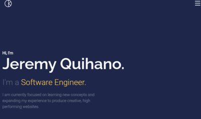
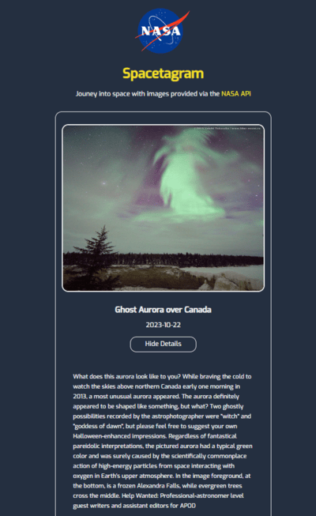
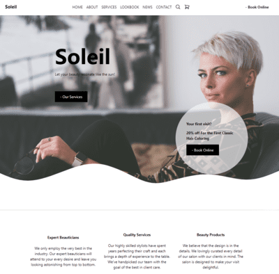
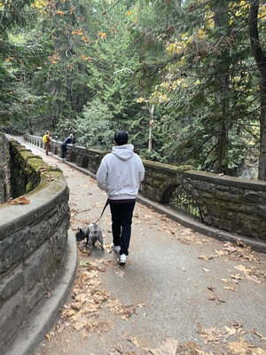
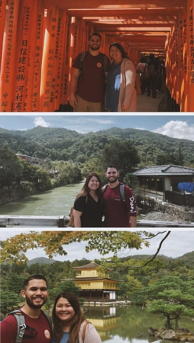
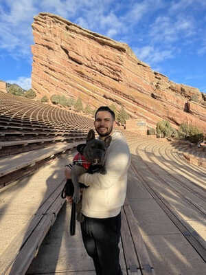
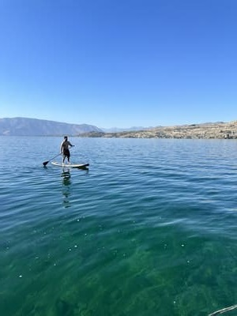
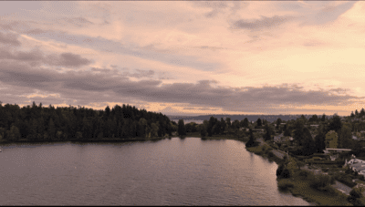

First Portfolio I created on my learning to code journey(2022)

Utilizing the NASA API, I created this webpage to showcase my newly learned skills(2022)

Landing page for a salon utilizing Tailwind CSS(2022)My dog Koda experiencing fog in Seattle for the first time(2020)

Exploring Canada with my Dog for the first time(2021)

Touring Japan with My Partner(2018)

Visiting the Famous Red Rocks Amphitheatre in Colorado(2021)

Last days of Summer Paddle Boarding on Lake Chelan(2023)Sun Flower Patches at Stocker Farms(2023)

Aerial Drone View of Seward Park and Mt. Rainier(2023)
 Jeremy Quihano
Jeremy Quihano